开放视频基模
问题与思路
ModelScope Text-to-Video Technical Report 由阿里巴巴的 Jiuniu Wang 等人撰写。模型在 2023 年 3 月已经公开，技术报告于同年 8 月发布，因此模型发布的时间早于本章按论文日期排列的位置。 #Wang-2023-ModelScope
它关注一个基础问题： 能否利用现成图像扩散模型，建立一个可供后续研究使用的文本到视频底模？ 把图像模型对同一提示词运行多次，只会得到一组各自合理的图片，人物位置、外观和动作不一定连续。与此同时，视频—文本数据比图像—文本数据少，只用视频微调还可能遗忘原来会画的概念。 #Wang-2023-ModelScope
ModelScope T2V 的思路包含两部分：在预训练潜空间 U-Net 中加入时间卷积和时间注意力，让帧之间交换信息；训练时同时使用图片与视频，让模型学习运动的同时保留语义覆盖。扩散过程与噪声预测目标沿用已有方法，主要改变的是 处理视频的网络结构与数据使用方式 。 #Wang-2023-ModelScope
潜空间中的视频
设输入视频为 \(X_0=(x_0^1,\ldots,x_0^F)\)，上标表示第几帧，下标表示扩散时刻。编码器逐帧压缩视频：
对于 \(F\) 帧、分辨率 \(H\times W\) 的 RGB 视频，潜变量的形状为
这里省略 batch 维。空间压缩八倍，并没有压缩帧数。编解码器使用 KL 正则化的 VAE，官方实现直接实例化 AutoencoderKL：编码器产生高斯分布的参数，没有离散码本查表。扩散处理的是实数潜变量。 #ModelScope-Implementation
论文将这个模块称为 VQGAN，并说明检查点取自 Stable Diffusion 2.1；官方权重文件也命名为 VQGAN_autoencoder.pth。但名称与实际类定义不一致，不能据此认为作者把 SD 2.1 的 VAE 换成了带离散码本的 VQGAN。这里按官方实现解释为 VAE。 #Wang-2023-ModelScope #ModelScope-Implementation
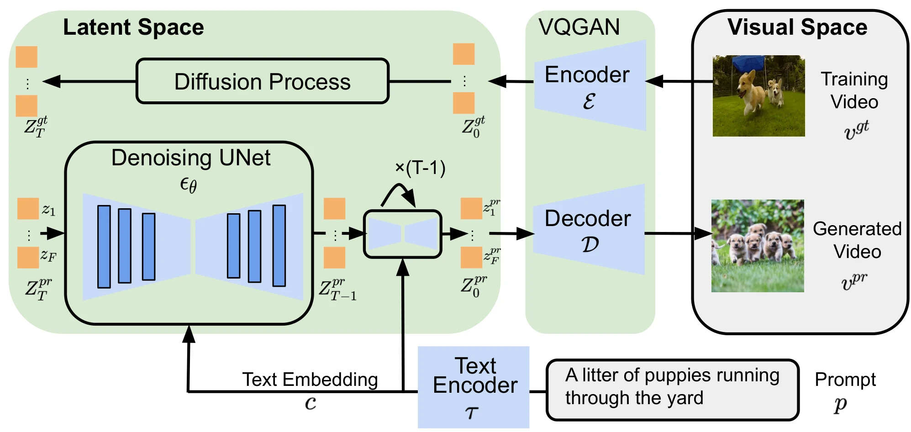
文本通过预训练 CLIP 文本编码器得到 token 序列 \(c=\tau(p)\)，再进入空间交叉注意力。若中间视频特征为 \(U\)，条件注入可概括为
\(d_k\) 是每个注意力头的键向量维数。视频特征提出查询，文本 token 提供键和值，因此这里直接用文本约束去噪，不经过 Make-A-Video 那样的文本到图像表征 prior。
时空模块
一个时空块依次组合空间卷积、时间卷积、空间注意力和时间注意力。默认重复次数分别为 \((2,4,2,2)\)。两次空间注意力包含视觉自注意力和文本交叉注意力，两次时间注意力均为自注意力。 #Wang-2023-ModelScope
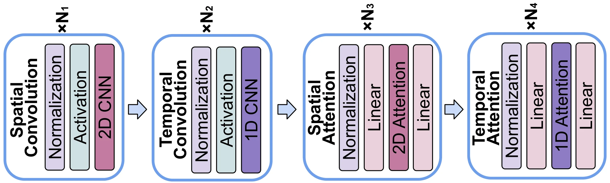
时间卷积怎样连接帧？
空间卷积先在每帧内部使用 \(3\times3\) 核；时间卷积随后沿帧轴使用长度为 3 的核。在某层特征 \(U\) 上，一次时间卷积可以示意为
\((u,v)\) 是空间位置，\(W_r\) 是作用在特征通道上的权重，边界由 padding 处理。这个式子只展示卷积的局部聚合，省略归一化、激活和残差结构。它使当前帧的特征能参考前后帧；多层堆叠进一步传播信息。
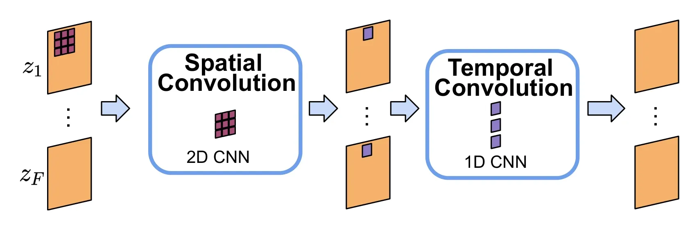
时间注意力又补充了什么？
空间自注意力把一帧的 \(hw\) 个位置作为序列；时间自注意力则把同一空间位置的 \(F\) 帧特征作为序列。若输入形状为 \(B\times F\times h\times w\times C\)，两者的序列组织分别可写成
\(B\) 为 batch size，\(C\) 为当前层通道数。时间卷积使用固定的局部窗口；时间注意力可以根据当前内容对不同帧赋予不同权重，建立超出邻帧范围的关系。 #Wang-2023-ModelScope
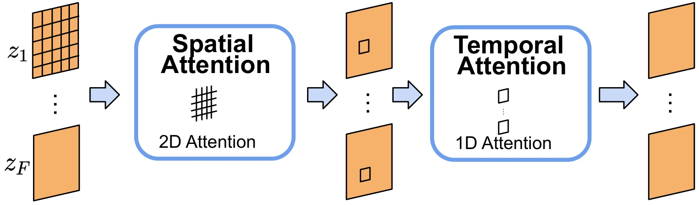
“同一空间位置”也不等于“同一个物体”：移动的物体会改变位置。网络通过交替的空间与时间运算传播信息，论文没有在这里显式估计光流或逐物体跟踪。因此，时间模块能学习运动关系，并不保证准确恢复每个物体的真实运动轨迹。 #Wang-2023-ModelScope
这也解释了后文 VideoCrafter2 所借用的“ModelScope 时间卷积”是什么：它是沿帧轴聚合特征的网络组件，不是一种新的加噪或反向采样公式。 #Wang-2023-ModelScope
训练目标
沿用本系列的记号，训练时抽取视频潜变量、扩散时刻与高斯噪声，构造
同一视频的各帧使用同一个扩散时刻 \(t\)，噪声张量覆盖整段视频。网络读取完整带噪视频、文本与时间，预测该张量中的噪声：
这是原文噪声均方误差目标的统一记号写法。监督覆盖视频张量；时间一致性由时空网络在视频数据上学习，报告没有另外给出一个必须叠加的光流 loss 或帧间一致性 loss。 #Wang-2023-ModelScope
怎样同时训练图片？ 把图片作为 \(F=1\) 的样本，编码、加噪，再计算相同的噪声预测损失。图像—文本对帮助模型继续学习丰富的概念与文本对应关系；视频—文本对提供跨帧运动监督。图片和视频通过同一网络的不同帧长度参与训练，这就是论文所说的 multi-frame training（多帧长度训练）。 #Wang-2023-ModelScope
| 训练来源 | 输入形式 | 主要作用 |
|---|---|---|
| LAION2B-en | 单帧图像＋文本 | 保留和补充图像语义知识 |
| WebVid | 16 帧视频＋文本 | 学习时间关系与运动 |
原文安排八分之一的训练 GPU 处理图像，其余处理视频；这不是损失权重 \(1:7\)，也不能直接等同于样本比例。单帧训练时，时间卷积与时间注意力仍保持启用，不是另建一个关闭时间模块的图像模型。 #Wang-2023-ModelScope
空间部分从 Stable Diffusion 2.1 初始化，时间卷积与时间注意力的输出采用零初始化，避免一开始就大幅扰动图像特征。预训练编解码器冻结，训练去噪 U-Net；报告未列出完整的空间参数更新范围，也未明确文本编码器是否冻结，因此不能将其概括为“只训练新增时间层”或断言所有参数都更新。原文使用 AdamW，学习率 \(5\times10^{-5}\)，训练 267K 次迭代；训练视频取中间方形区域，以 3 fps 抽取 16 帧，实验输出分辨率为 \(256\times256\)。 #Wang-2023-ModelScope
怎样生成视频
推理从整段视频的高斯噪声潜变量开始，而不是先生成一张图片再逐帧续写。论文训练使用 1000 个离散扩散时刻，默认推理采用 50 步 DDIM 与 classifier-free guidance（CFG，无分类器引导）。 #Wang-2023-ModelScope
- 编码提示词，初始化 \(Z_T\sim\mathcal N(0,I)\)，形状包含目标帧数。
- 在每个采样时刻，分别预测有条件与无条件噪声，组合为
这里 \(w\) 为 CFG 强度。随后预测干净潜视频
并由 DDIM 更新到所选的下一个采样时刻。以确定性 DDIM 为例，从 \(t\) 到 \(s\lt t\) 的更新为
这两个公式用来解释 DDIM 如何消费网络输出，不把报告未指定的 \(\eta\) 或 CFG 数值当成默认配置。50 步采样使用训练时间网格的子序列，训练的 1000 步不等于推理必须调用网络 1000 次。
- 重复去噪至获得 \(Z_0\)，逐帧解码 \(x_0^f=\mathcal D(z_0^f)\)，形成视频。
每一步都是多帧一起进入时空网络。时间模块使各帧预测彼此相关，因此整段生成与“独立画 16 张图片”不同。
结果与局限
论文在未参与训练的 MSR-VTT 上进行零样本评估，报告如下结果。FID-vid 衡量视频视觉分布差异，FVD 为 Fréchet Video Distance（弗雷歇视频距离），CLIPSIM 为 CLIP 文本—视觉相似度。 #Wang-2023-ModelScope
| 指标 | ModelScope T2V | 方向 |
|---|---|---|
| FID-vid | 11.09 | 越低越好 |
| FVD | 550 | 越低越好 |
| CLIPSIM | 0.2930 | 越高越好 |
根据原论文 Table 1 整理，仅保留 ModelScope 一行并转为纵向展示。前两项使用从测试集抽取的 2048 段视频，CLIPSIM 则沿用报告的近六万条测试描述口径。它们反映报告当时的短视频设置，不宜直接与分辨率、采样数量和实现不同的新模型比较。 #Wang-2023-ModelScope
ModelScope T2V 提供了一个开放的潜视频扩散基线：继承图像模型，用局部时间卷积和跨帧注意力连接视频，再通过图像—视频混训保留语义能力。这与上一篇的潜空间时间适配路线相通，其价值还包括可供后续工作微调和复用的模型与组件。 #Wang-2023-ModelScope
局限也很明确：\(256\times256\)、16 帧的设置不足以支撑高清长视频；空间与时间运算的分解不保证物理正确性或长期身份一致性；混合图片可以缓解语义遗忘，却不能替代复杂运动的视频监督。后文 LaVie、Show-1 与 VideoCrafter 将分别从级联、表示空间分工及数据质量等方向继续处理这些问题。
问题与思路
上一章的 Video LDM 展示了潜空间视频生成；LaVie 进一步研究怎样构建完整的级联潜视频扩散系统。它的关键问题除了算力，还有知识保持：一个已经会画许多风格、角色和场景的图像模型，学习视频运动后，能否仍保留这些能力？ #Wang-2023-LaVie
Wang 等人在 2023 年提出的 LaVie: High-Quality Video Generation with Cascaded Latent Diffusion Models，以 Stable Diffusion 为起点，构建基础文本到视频、时间插值和视频超分辨率三个模型。其主要思路是：以潜空间降低开销，用时间模块连接多帧，再通过图像—视频联合微调，缓解只用视频训练造成的遗忘。 #Wang-2023-LaVie
这不是提出一种全新的扩散 loss，也不是所有组件都只训练新增时间层。基础模型会进行整网联合微调；超分辨率模型则冻结已有空间层、训练时间层。不同模块的训练策略需要分开理解。 #Wang-2023-LaVie
三级潜扩散
LaVie 的三个模型分别训练，推理时依次运行。每一级读取文本条件，后两级另外读取前一级的视频。 #Wang-2023-LaVie
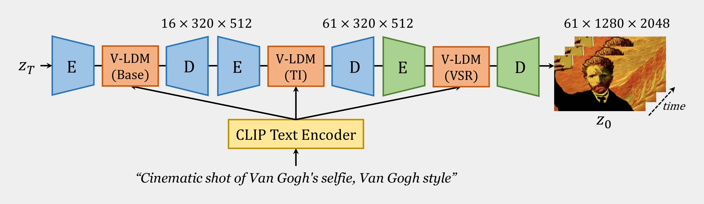
| 模块 | 输出帧数 | 输出高×宽 | 任务 |
|---|---|---|---|
| 基础文本到视频模型 | 16 | \(320\times512\) | 生成内容与基本运动 |
| 时间插值模型 | 61 | \(320\times512\) | 细化帧间变化 |
| 视频超分辨率模型 | 61 | \(1280\times2048\) | 增加空间细节 |
“潜扩散级联”并不意味着三个网络共享一条连续潜轨迹。前级结果作为后级条件，各级在自己的模型与表示中进行去噪；需要像素输出或新的编码时，会通过相应的自动编码器。尤其是四倍上采样器具有自己的表示尺度，不能假定所有级别潜变量的数值和尺寸完全相同。 #Wang-2023-LaVie
与 Imagen Video 相比，LaVie 将这些生成任务放入潜扩散框架，减少主要去噪网络的空间开销；与后文 Show-1 相比，它没有用低分辨率像素关键帧加末级专家翻译的混合方案。 #Wang-2023-LaVie
基础网络与加噪
基础模型的自动编码器与扩散 U-Net 从 Stable Diffusion 1.4 初始化。编码器逐帧得到清晰潜视频：
这是先编码、再在潜空间加噪。不能把它误写为先给像素视频加噪、再编码，非线性编码器一般不与加噪操作交换顺序。
模型将图像卷积扩展到带时间轴的处理布局，并在原有 Transformer 块中加入时间注意力，形成 ST-Transformer。空间注意力与文本交叉注意力负责各帧的图像结构和语义条件，时间注意力跨帧交换信息，并用 RoPE（旋转位置编码）表示时间位置。 #Wang-2023-LaVie
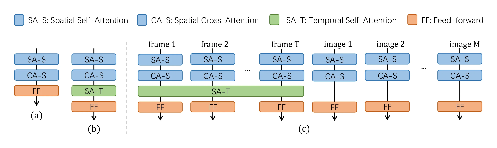
这里新增时间轴本身不会自动创造运动；真正的时间关系由时间注意力及视频训练学习。论文比较过更复杂的时间模块，最终选择相对简单的设计，理由是复杂度增加没有带来同等程度的收益。 #Wang-2023-LaVie
为什么联合训练图像与视频
只用视频训练会忘记什么？
预训练图像模型见过广泛的角色、艺术风格与组合；视频数据可能较少出现这些内容。若整网只在视频上微调，参数会逐渐适应视频数据，已有概念可能退化。论文用“泰迪熊”等概念展示这种灾难性遗忘。 #Wang-2023-LaVie
直接冻结所有空间层也并非必然最佳：新时间模块与已有空间特征之间可能存在适配困难。LaVie 因而允许基础网络整体学习，同时继续用图像任务约束它保留外观知识。 #Wang-2023-LaVie
loss 怎样构建？
将图像潜变量记为 \(z_0\)，视频潜变量记为 \(Z_0\)，对应文本分别为 \(c_I,c_V\)。用 \(\lambda_I\) 表示原文的图像损失系数，以免与加噪系数混淆：
其中两类带噪状态都由其清晰潜变量与高斯噪声构造。视频项要求网络学会多帧去噪和运动；图像项继续训练单图语义与外观。这里的权重区分的是图像任务与视频任务，不是已知帧与未知帧，也不是两个扩散时刻。 #Wang-2023-LaVie
实现中，每段 16 帧训练视频旁边加入 4 张独立图像。视频帧参与时间交互，独立图像通过共享空间路径学习自己的图像—文本任务，不把这些无关图像当成连续动作。添加 4 张图像并不能单独推出 \(\lambda_I\) 的确切值；损失归一化和任务权重仍是不同设置。 #Wang-2023-LaVie
这种训练的目标是将图像中的知识与视频中的运动结合，并不保证所有预训练能力都被完整保留，也不保证一个静态概念自动获得任意复杂动作。
插值怎样生成 61 帧
时间插值模型从基础模型初始化，并增加输入处理以接收低帧率条件。它有专门的条件训练，不是仅在推理时放入已知帧，或计算一次重建引导。 #Wang-2023-LaVie
令 \(Y\) 是低帧率片段，\(R(Y)\) 表示按目标时间布局复制、对齐后的条件；令 \(Z_t^{\mathrm{dense}}\) 是目标高帧率潜视频的带噪状态。输入机制可概括为
其中 \(C(Y)\) 表示条件视频在模型输入中的相应表示。拼接沿通道维发生，而不是把两段视频接成长故事。目标视频的真实高帧率片段来自训练数据，模型学习根据稀疏上下文进行去噪。
推理时，条件视频已确定，目标部分从噪声初始化。网络在每轮联合读取两者与文本，生成高帧率视频。复制条件只是告诉网络已有画面大致是什么，不能替代真正生成中间运动。 #Wang-2023-LaVie
三帧插入相邻关键帧之间，帧数满足
但 LaVie 有一个必须强调的细节：输出的全部 61 帧都重新生成，包括原先 16 张关键帧对应的位置。 原视频是生成条件，不是逐像素锁定的最终输出。因此它与“只填空、原帧完全不动”的传统插帧不同，有机会统一调整外观与细节，也可能改变原关键帧。 #Wang-2023-LaVie
插值增加的是同一段时间内的采样密度，不是四倍延长内容。论文插值训练使用较小空间裁块，推理时处理完整基础视频；这也体现了级联条件任务的局部性。 #Wang-2023-LaVie
视频超分辨率与采样
最后一级从预训练 Stable Diffusion 四倍图像上采样器出发，加入时间注意力和 3D 卷积模块，使细节生成能够跨帧协调。它读取低分辨率视频、文本以及条件噪声水平，不是逐帧独立放大。 #Wang-2023-LaVie
这一阶段固定已有空间层，只训练新增时间层，并在 \(320\times320\) 空间裁块上训练。训练数据同时包含视频和高质量图像；用于此模块的图像通过随机平移构造成模拟镜头移动的短片。它与基础模型直接加入独立图像的训练组织不同，不能把二者写成同一操作。
整体推理可依次理解为：
- 文本经 CLIP 文本编码器提供条件，基础模型从潜噪声生成 16 帧。
- 解码得到基础片段，将其作为插值模型条件，生成 61 帧。
- 将较密集的视频送入视频超分辨率模型，通过自身的条件潜扩散过程提高每帧分辨率。
- 解码得到最终 \(61\times1280\times2048\) 视频，尺寸按帧数×高×宽表示。
例如，基础阶段采用噪声预测时，每步先换算干净潜变量：
再由所选反向采样器更新到更低噪声时刻。后两级同样进行多步去噪，只是额外读取各自的视频条件；不能把整个级联误解为三次网络调用。这里用统一公式说明去噪接口，不将它当成原文对所有模块采样器超参数的完整披露。 #Wang-2023-LaVie
LaVie 还展示了长视频扩展：为基础模型额外加入首帧条件并微调，推理时把上一段末帧用于下一段，递归续写。这需要进一步条件训练，不是三级基本模型自动获得的任意长度能力。 #Wang-2023-LaVie
数据、实验与局限
LaVie 的另一项工作是整理更高质量的视频数据。论文除 WebVid10M 与 LAION 图像数据外，还构建 Vimeo25M：从 Vimeo 视频切分单场景片段，并使用 VideoChat 自动生成文本。实现中先训练相对简单的 WebVid 内容，再逐渐引入更多样的 Vimeo 场景和运动。 #Wang-2023-LaVie
因此它与 Make-A-Video 的数据分工不同：LaVie 使用文本—视频配对监督，其中部分描述由自动模型生成，并不是不需要视频描述。论文还报告按画质等条件筛选训练资源，数据集名称所指的总规模不应直接当成每个模型都完整使用的训练数量。 #Wang-2023-LaVie
原文定量评估主要针对基础模型的 16 帧结果，以降低大规模采样成本，不是对最终 61 帧高分辨率输出直接打分。部分对照如下：
| 方法 | UCF101 零样本 FVD，越低越好 | MSR-VTT CLIPSIM，越高越好 |
|---|---|---|
| Video LDM | 550.61 | 0.2929 |
| LaVie | 526.30 | 0.2949 |
| Make-A-Video | 367.23 | 0.3049 |
表中保留原文列出的结果，而不据此宣称所有模型在完全一致条件下训练或采样。原文自己也指出提示词构造、视频训练来源及输出处理存在区别。特别是 Make-A-Video 实际使用的是 HD-VILA 的子集，不能把原数据集名称中的 100M 直接当成它使用的视频数量。 #Wang-2023-LaVie
LaVie 的联合训练比较则主要提供定性图像证据：只训练视频的整网微调会遗忘某些外观概念，只训练时间模块也有适配困难，联合图像—视频训练较好地保留这些概念。它支持训练策略的动机，但不能用这组图单独量化每一种能力的保留程度。 #Wang-2023-LaVie
LaVie 的启发是把潜视频生成的三个问题同时处理：时间模块学习运动，图像任务帮助保留外观知识，分级模型细化时间与空间分辨率。它不是在每一项基础机制上都另起炉灶，而是将这些训练与数据设计组织成可用系统。 #Wang-2023-LaVie
局限仍包括多主体属性混合、手部等人体细节错误，以及递归续写的长期漂移。论文提出更强语言模型与更丰富数据可能改善部分问题，但这属于后续方向，不能当成已经验证的解决方案。官方代码与发布资源入口为 Vchitect/LaVie，具体骨干和权重许可仍随各组件分别适用。 #Wang-2023-LaVie
问题与思路
前一章已经展示了像素扩散与潜扩散的取舍：像素模型直接处理画面，但高分辨率视频计算昂贵；潜扩散通过压缩降低成本，却需要考虑压缩尺度与生成任务是否匹配。Show-1 提出的问题是：是否必须让整个系统始终使用同一种扩散空间？ #Zhang-2023-Show1
Zhang 等人的 Show-1: Marrying Pixel and Latent Diffusion Models for Text-to-Video Generation 于 2023 年首次公开。它采用混合级联：在低分辨率像素空间确定内容和运动，再让潜空间模型完成最终的高分辨率细化。 #Zhang-2023-Show1
这里的动机有一个具体尺度背景：若关键帧只有 \(64\times40\) 个像素，采用每个空间方向八倍压缩后，潜网格仅剩 \(8\times5\)。作者在对照实验中发现，这种设置不利于保留所需的空间语义，低分辨率像素关键帧模型的文本对齐与运动效果更好。这是该论文架构和数据设置下的观察，不是证明所有像素模型都比所有潜模型更懂文本。
“蓝色老虎”的例子：画面真实，不等于符合提示词。
例如，提示词要求“夕阳下，草地里有一只蓝色老虎，周围环绕着蝴蝶”。模型不仅要画出一只老虎，还要同时满足蓝色、夕阳与蝴蝶等属性和关系。若生成了一只外观很真实、却仍是棕黄色的老虎，单帧画质可能不错，但文本对齐已经失败。 #Zhang-2023-Show1
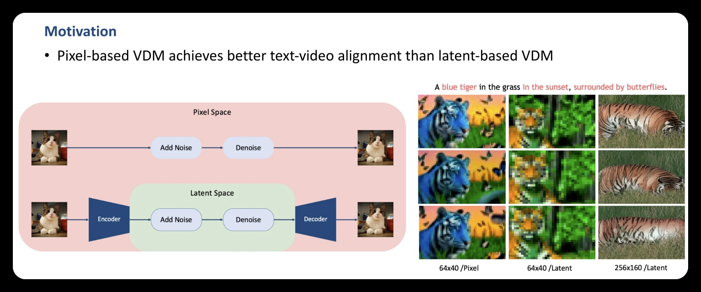
这组示例中，\(64\times40\) 的像素模型虽然画面粗糙，却呈现了蓝色老虎及夕阳、蝴蝶等提示内容；同尺寸的潜模型未能清楚表达这些内容；较高分辨率的潜模型能生成更清晰的老虎，却遗漏了蓝色等指定属性。Show-1 首先要解决的是“生成的内容是否符合文字”，而不仅是“画面是否清晰”。 #Zhang-2023-Show1
作者据此选择先在较小的像素画布上确定语义与运动，再在后续阶段提升清晰度。其解释包括：极低分辨率再经过空间压缩，潜网格过小；直接提高潜模型输出分辨率，在其对照中也未获得同样的文本对齐效果。不过，示例和消融支持的是这组配置下的设计选择，不能单独证明 VAE 必然丢掉“蓝色”，或潜扩散天然无法生成蓝色老虎。 #Zhang-2023-Show1
反过来，在高分辨率阶段，主要内容已经由前级提供，不必再次从头决定全部场景。此时在压缩空间细化可以减少计算。Show-1 因而把“决定画面内容”和“提高最终画质”分配给不同尺度的模型。 #Zhang-2023-Show1
本节以 arXiv 当前修订版的方法和实验为依据；修订版也包含后续扩展应用，不将其中全部结果都视为 2023 年初版同时披露。官方代码入口为 showlab/Show-1。 #Zhang-2023-Show1
像素与潜空间的分工
Show-1 的基本流程有四级： #Zhang-2023-Show1
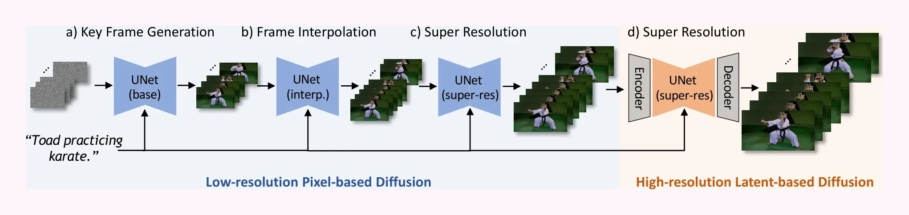
| 阶段 | 任务 | 扩散空间 | 帧数与空间尺寸 |
|---|---|---|---|
| a | 文本生成稀疏关键帧 | 像素 | 8 帧，\(64\times40\) |
| b | 时间插值 | 像素 | 29 帧，\(64\times40\) |
| c | 第一次空间超分辨率 | 像素 | 29 帧，\(256\times160\) |
| d | 最终细化与超分辨率 | 潜空间 | 29 帧，\(576\times320\) |
表中保留原文实现部分的空间边长对，不与前文视频张量的轴顺序混用；最终输出的横向画幅为宽 576、高 320。论文也用理想化的尺度倍率概括方法，实际输出尺寸以具体实现设置为准。 #Zhang-2023-Show1
前三级并不把整段视频压缩到 VAE 潜空间。最后一级才使用编码器与解码器，因此“混合”指不同阶段的工作空间不同，不是每层都同时处理一份像素变量与一份潜变量。 #Zhang-2023-Show1
各阶段仍使用文本条件。Show-1 不是 Make-A-Video 那种由 prior 将文本转成图像向量后再传给视频生成器的接口，而是保留文本编码与 U-Net 交叉注意力的条件路径。原文的主模型以 DeepFloyd 图像生成模型初始化，并在 WebVid-10M 上进行视频学习。 #Zhang-2023-Show1
网络与训练目标
怎样复用图像能力？
模型在图像 U-Net 的空间残差块之后加入时间卷积，并在空间注意力与文本交叉注意力之后加入时间注意力。空间模块逐帧处理，时间模块跨帧交换信息；文本作为交叉注意力的键和值： #Zhang-2023-Show1
这里 \(H\) 是当前帧的空间特征，\(c\) 是文本序列表示。时间注意力再让不同帧的这些特征相互影响。
原文网络模块图说明：时间适配阶段固定已有空间层，更新新增时间层。这个冻结范围描述主要的图像到视频改造，不等于插值模型扩展的输入层、条件处理以及后续专家微调都无需训练。 #Zhang-2023-Show1
损失如何构建？
关键帧模型沿用条件噪声预测。令真实关键帧片段为 \(X_0\)，构造
训练标签是自行加入的噪声，网络读取整段带噪关键帧与文本。损失形式并不新，主要变化在扩散空间、各级条件与可训练模块。
推理时，关键帧阶段从整段像素噪声开始生成。后面的插值与第一级超分辨率分别拥有自己的条件模型，不能仅凭关键帧生成器就自动得到这些能力。 #Zhang-2023-Show1
补帧与第一次放大
怎样从 8 帧变成 29 帧？
与 Video LDM 的掩码思路类似，Show-1 为相邻两张关键帧训练中间三帧的条件生成：
[已知帧 | ? ? ? | 已知帧 | ? ? ? | 已知帧 …]
保留共享端点，帧数为
令 \(M\) 在已知位置为 1、未知位置为 0，将清晰上下文记为 \(C_M=M\odot X_0\)。输入由带噪目标、上下文和掩码沿通道拼接，训练目标为
RGB 视频的输入通道数为 \(3+3+1=7\)，输出仍是 3 通道的噪声预测。待生成位置只在清晰条件中被遮住，并不从带噪目标中删除。原文还对已知帧条件加入小幅噪声增强，降低真实训练条件与前级生成结果之间的差异。 #Zhang-2023-Show1
怎样第一次提高空间分辨率？
第一级超分辨率仍在像素空间。将前级视频双线性放大为 \(U(Y)\)，与目标尺寸的带噪视频拼接：
上式省略条件噪声增强的记号，强调两种输入的分工：\(X_t\) 是要更新的生成状态，\(U(Y)\) 是结构条件。普通缩放只将条件摆到目标尺寸，新增细节由扩散模型生成。
为控制显存，论文将插值后的视频分段上采样，并把前一段最后一张已放大的帧作为下一段的边界条件，以改善段间连续性。这是上采样阶段的分段处理，不是将原故事续写为更长视频。 #Zhang-2023-Show1
专家翻译怎样生成高清结果
前级视频可能已有轻微伪影或时间不一致。若最后一级只把它作为额外输入条件，模型可能保留这些问题。Show-1 因而引入 expert translation，包含两项改动：改变生成的起点，以及对特定噪声范围进行专家微调。 #Zhang-2023-Show1
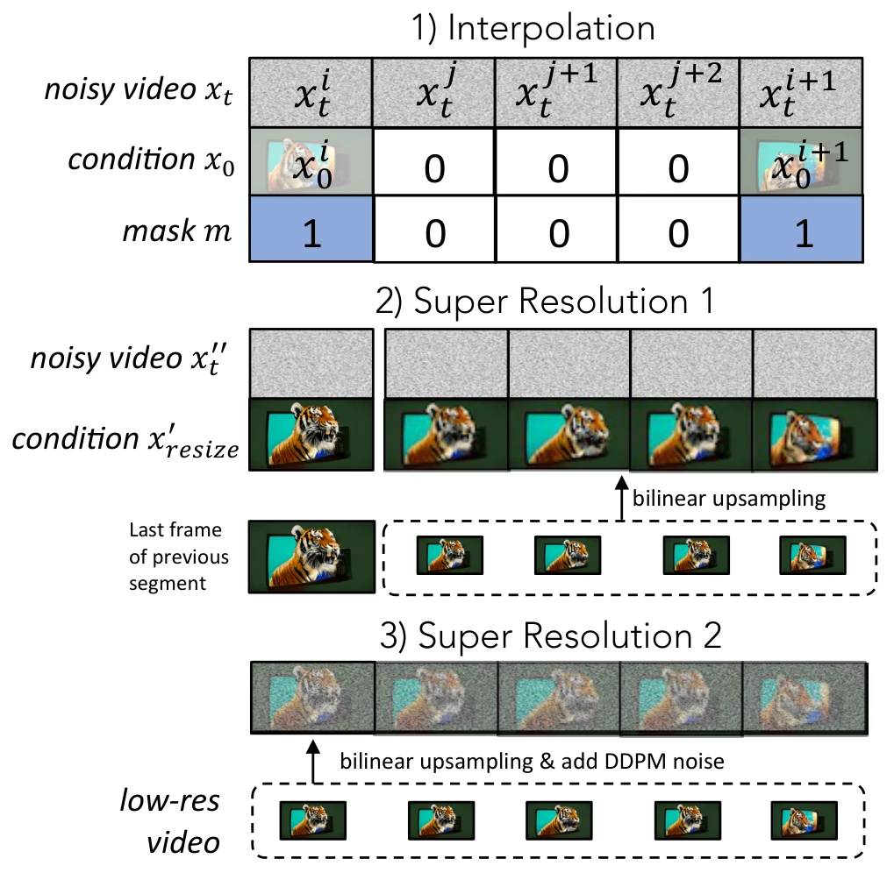
第一项：从已有视频的加噪编码出发。
设 \(Y\) 是前级输出，先放大到目标尺寸，再经 VAE 编码：
选一个中间扩散时刻 \(t_\star\)，构造
然后用同一文本条件，从 \(t_\star\) 逐步去噪到低噪声端，再解码得到视频。它借鉴 SDEdit：不从与输入无关的纯噪声重新生成，而是扰动已有结果，让模型在保留部分结构的同时重建细节。
这里的 \(Z_{t_\star}\) 本身就是当前生成状态，不是额外拼接的一组低分辨率条件通道。这与前一级 \([X_t,U(Y)]\) 的输入方式不同。
它也不是 DDIM inversion：没有先沿确定性反演路径求原图对应的噪声，而是直接采样高斯噪声并执行前向加噪。结构保留是由初始化、噪声强度及模型共同作用的经验结果，不是一一映射保证。噪声过大可能改变原内容，过小则可能保留伪影，不能将它描述成无损修复。 #Zhang-2023-Show1
第二项：只在相应噪声区间做专家微调。
原文以最大时间索引 1000 为例，将末级模型的微调范围限制在 0—900，并从例如 900 的中间状态开始采样。其想法是前级已经提供整体结构，末级应集中学习后续细化，而非再承担最早的从纯噪声建立场景的任务。 #Zhang-2023-Show1
用潜空间噪声回归概括，这种训练范围的改变可写为
该式将原文的区间训练策略写入统一记号，\(p_{[0,t_\star]}\) 表示只在选定范围采样，不据此补造原文未披露的精确时间权重。它不是对每段输入视频单独训练，也不是只有推理时截短时间：末级模型预先做过相应微调，推理再选择匹配的起点。
论文用“早期建立结构、后期细化”解释这个选择；它应理解为设计动机与经验规律，而不是每个扩散时刻都只负责一种严格隔离的视觉内容。
完整采样流程
按上述分工，生成一段视频可概括为： #Zhang-2023-Show1
- 编码文本，从像素噪声生成 8 张低分辨率关键帧。
- 使用掩码条件插值模型，在关键帧之间补出中间帧，得到 29 帧。
- 用像素空间超分辨率模型将视频提高到中等分辨率，分段处理时传递边界帧条件。
- 将中分辨率视频放大、编码并加噪至选定中间时刻。
- 用经过专家微调的潜视频模型，从该时刻向低噪声端生成，并解码为最终视频。
所以，只有最初的内容生成从无结构噪声开始；末级潜空间生成利用已有视频构造起点。不同阶段的采样起点和条件机制不能用一句“都是从噪声生成”一笔带过。 #Zhang-2023-Show1
与前几篇对照：Imagen Video 强调多级像素条件生成；Video LDM 强调复用图像潜扩散及时间适配；Show-1 则在阶段之间切换扩散空间，并为末级采用带输入结构的中间噪声初始化。它们共享许多构件，但整体任务分配不同。 #Zhang-2023-Show1
实验与局限
当前修订版的低分辨率关键帧消融保持相同 T5 文本编码器、相同参数规模，并使用相近的图像初始化与视频训练设置。以下摘录其部分结果；这些模型的最终超分辨率均采用潜模型： #Zhang-2023-Show1
| 关键帧设置 | CLIPSIM，越高越好 | UCF-101 FVD，越低越好 |
|---|---|---|
| \(64\times40\) 像素模型 | 0.3096 | 383 |
| \(64\times40\) 潜模型，八倍空间压缩 | 0.2441 | 584 |
| \(256\times160\) 潜模型，八倍空间压缩 | 0.2874 | 416 |
这些结果支持该设置下先用小尺寸像素关键帧的选择，但不能单独证明“压缩必然损害文本理解”，更不能推广到之后所有 VAE、视频表征与 Transformer 架构。 #Zhang-2023-Show1
末级超分辨率的消融进一步分开检验了 expert translation 的两项改动：
| 末级方案 | FVD，越低越好 | IS，越高越好 |
|---|---|---|
| SDx4 加时间模块 | 459 | 32.98 |
| 改为已有视频的加噪初始化 | 423 | 33.83 |
| 再加专家微调 | 383 | 35.67 |
这说明作者的收益不只是来自“最后换成潜空间”，还与输入构造和训练噪声区间有关。原文也报告混合方案约 15 GB 的峰值推理显存，并与较昂贵的像素末级设置对照；显存取决于帧数、分辨率、精度与执行方式，不能把这个数值当成任意配置的固定需求。 #Zhang-2023-Show1
Show-1 的主要启发是：扩散空间可以按阶段选择，不必将所有任务都交给一种表示。它仍需要多个模型、时间插值与阶段衔接；中间加噪可能改变内容，级联误差也可能保留。29 帧的短片配置并不解决长期叙事、复杂物理一致性或长视频身份保持。 #Zhang-2023-Show1
“开放视频基模”在本章表示讨论可获得代码或模型资源的研究路线，不自动等于所有依赖权重都采用同一许可。Show-1 的图像骨干与末级模型有各自的依赖，实际使用还应以对应发布资源的许可为准。 #Zhang-2023-Show1
问题与思路
前面几篇已经讨论了潜空间、级联与图像知识保持。VideoCrafter1 更侧重把这些能力组织成两种可用的开放模型：文本到视频（T2V），以及参考图像到视频（I2V）。 #Chen-2023-VideoCrafter1
Chen 等人在 2023 年公开 VideoCrafter1: Open Diffusion Models for High-Quality Video Generation。其 T2V 模型学习根据文本生成视频；I2V 模型则增加参考图条件，尝试同时维持画面内容、结构与合理运动。 #Chen-2023-VideoCrafter1
为什么需要第二种输入？“一个穿红衣服的人在走路”可以描述语义，却很难精确指定某个人的脸、衣服纹理和场景构图。给一张参考图可以补充这些细节，但如何让图像条件进入多帧去噪网络，同时保留文本控制，需要专门设计与训练。 #Chen-2023-VideoCrafter1
本节只讲 VideoCrafter1。后续 VideoCrafter2 对高质量视频数据和训练策略的研究是另一篇工作，不把其方法与结果归到第一代模型。 #Chen-2023-VideoCrafter1
潜空间与时空网络
VideoCrafter1 使用 Stable Diffusion 的预训练 VAE 逐帧编码和解码。虽然原文将其作为系统的 video VAE 介绍，但其编码器并不在这里联合提取时间信息；多帧关系主要由潜空间中的视频去噪网络学习。 #Chen-2023-VideoCrafter1
这里 \(\ell\) 是视频帧位置，\(t\) 是扩散时刻。整个带噪潜视频进入带跳跃连接的 3D U-Net，各块包含卷积、空间 Transformer 和时间 Transformer。
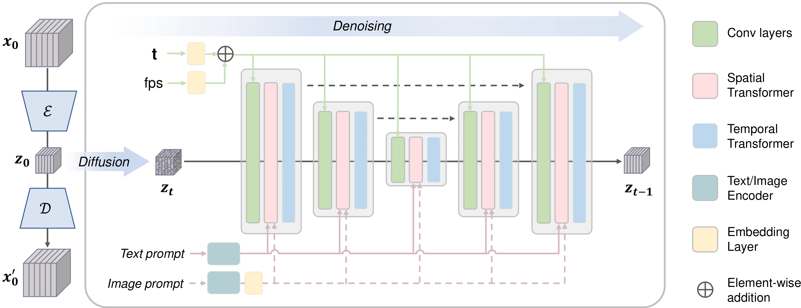
空间模块处理每帧内部的结构，文本交叉注意力提供语义条件；时间模块让帧间特征交互。论文中的时间 Transformer 含时间注意力与前馈网络，而不是只把帧轴当作普通 batch 就完成视频建模。 #Chen-2023-VideoCrafter1
网络还读取 fps 条件。fps 与扩散时刻各自经正弦编码和 MLP 转换，再将嵌入相加以调制卷积特征：
两者含义不同：扩散时刻指定噪声水平，fps 指定视频时间采样尺度。提供 fps 能影响模型学到的运动节奏，但不等于准确指定每个物体的像素速度，也不保证任意帧率都能稳定生成。 #Chen-2023-VideoCrafter1
文本到视频怎样训练
文本经 CLIP 文本编码器得到序列表示 \(C_T\)，通过空间交叉注意力影响当前潜特征。以当前特征 \(H\) 为查询，文本表示为键和值，可写为
结合前向加噪，训练可统一理解为条件噪声回归：
这个写法概括原文的噪声估计任务，并不另行引入新的损失或假定未披露的权重。模型要预测整段潜视频的噪声，通过时间模块利用多帧信息。
原文采用图像—视频联合训练，并逐步提高训练分辨率。与 LaVie 类似，图像数据提供广泛视觉内容，视频数据提供时间变化。但论文没有在该方法段完整列出与 LaVie 相同的图像任务权重，因此不能把前一篇的公式系数直接搬过来。 #Chen-2023-VideoCrafter1
| 训练阶段 | 空间尺寸，按原文宽×高 | 迭代数 | batch size |
|---|---|---|---|
| 初始训练 | \(256\times256\) | 80K | 256 |
| 继续微调 | \(512\times320\) | 136K | 128 |
| 高分辨率微调 | \(1024\times576\) | 45K | 64 |
这些是同一模型逐步适配更高分辨率的训练阶段，不是 Imagen Video 那样推理时必须逐级运行的三个超分辨率模型。原文最终 T2V 模型可以直接生成高分辨率片段。 #Chen-2023-VideoCrafter1
参考图怎样进入模型
为什么不只用一个全局图像向量？
CLIP 图像编码器的全局语义 token 擅长概括“图里是什么”，但可能不足以保留精细外观。VideoCrafter1 因而使用图像 ViT 最后一层的整组视觉 token，其中包括更丰富的局部 patch 信息，再经可学习投影网络转换为条件表示： #Chen-2023-VideoCrafter1
这仍然是学习后的特征表示，不是原图像素的无损拷贝。更多局部特征为保留细节提供更好的条件，但不能保证身份、纹理和构图完全不变。 #Chen-2023-VideoCrafter1
图像与文本怎样共同作用？
I2V 模型使用双交叉注意力，文本与图像各自形成一个注意力分支：
两个分支共享当前视频特征产生的查询 \(Q\)，但图像分支使用新增的键和值投影：
因此，文本与图像各自计算相关性，再汇合到视频特征。它不是把文本和图像向量简单相减，也不是把参考图反复复制成视频就结束。图像分支帮助指定外观，文本分支仍能提供语义与动作提示，实际结果来自二者与视频先验的共同作用。 #Chen-2023-VideoCrafter1
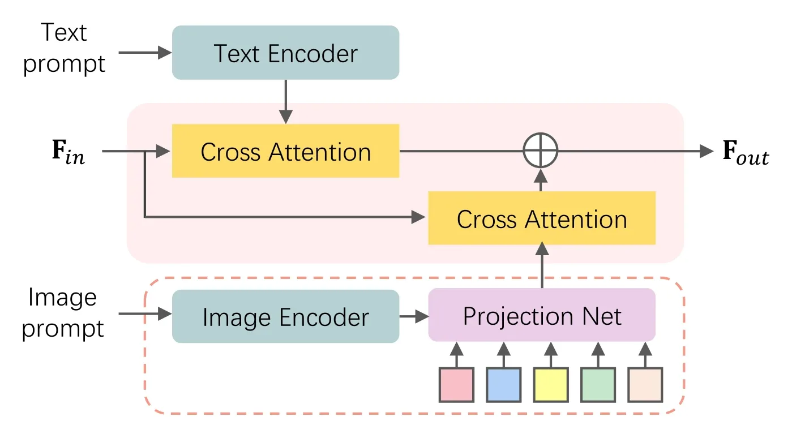
这个机制与前面条件扩散篇介绍的 IP-Adapter 解耦图文注意力有联系，论文也引用了相关视觉条件工作。但它属于视频模型中的参考图接口，不应把整个 VideoCrafter1 等同于一个图像提示适配器。 #Chen-2023-VideoCrafter1
图像到视频的训练与采样
I2V 模型需要专门训练，不能只在已有文本模型推理时接入未经学习的 CLIP 图像特征。原文先学习图像特征到交叉注意力条件空间的映射，再固定图像与文本的条件映射，对视频模型进行微调以改善对齐。 #Chen-2023-VideoCrafter1
“固定映射”不等于把整套视频网络冻结，也不意味着第二阶段不再训练。其噪声回归接口可概括为
这与文本到视频共享去噪原理，但增加了训练过的图像条件路径。论文没有在这部分完整披露参考帧采样与所有冻结参数的逐层清单，因此不据此补造“永远选第一帧”或“只训练两组注意力矩阵”等限制。 #Chen-2023-VideoCrafter1
推理时，T2V 与 I2V 可用同一条基本流程理解：
- 编码文本；I2V 额外编码参考图并投影为视觉 token。
- 初始化整段潜视频的高斯噪声。
- 每轮根据当前状态、扩散时刻、fps 和条件预测噪声，再按反向采样器降低噪声。
- 得到干净潜视频后，用 VAE 逐帧解码。
例如，噪声输出对应的干净潜变量估计为
这个公式说明生成接口；具体反向更新还取决于所选采样器，不能把干净预测本身当作采样已经完成。
参考图在这里通过视觉特征指导生成，不是 VDM 中被硬性替换的已知帧，也不是必须逐像素保留的输出首帧。因此它能够合成动态画面，同时也可能出现外观偏移。所谓 image-to-video 描述的是条件任务，不自动承诺输入图成为原样不动的第一帧。 #Chen-2023-VideoCrafter1
数据、实验与局限
原文训练使用 LAION COCO 图像描述数据、WebVid-10M，并额外整理约 1000 万段分辨率高于 \(1280\times720\) 的视频用于 T2V。其高质量结果不能仅归因于双交叉注意力，也与分辨率渐进训练和视频数据有关。 #Chen-2023-VideoCrafter1
原文使用 EvalCrafter 从视觉质量、文本对齐、运动质量与时间一致性等维度评价模型。这些维度不能互相替代：画面清晰不代表动作正确，运动幅度大也不代表时间稳定。论文指出较大的运动有时会引入一致性错误，I2V 也仍存在成功率与脸部伪影问题。 #Chen-2023-VideoCrafter1
对于参考图接口，原文比较只使用全局语义 token 和使用整组视觉 token 的结果，后者在示例中更好地保留头发等外观细节。这个对照支持丰富图像特征的动机，但不能从少量示例推出对所有身份、动作与遮挡都能准确保持。 #Chen-2023-VideoCrafter1
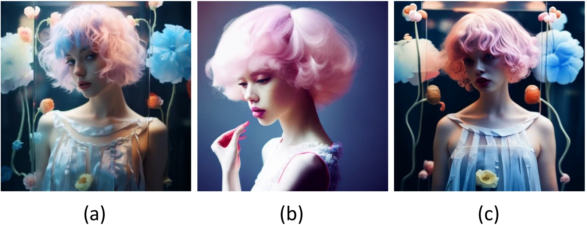
VideoCrafter1 与前面工作的区别可以归纳为：
| 对照对象 | VideoCrafter1 的侧重点 |
|---|---|
| Make-A-Video | 已提供参考图时直接编码并学习条件映射，不需要从文本生成图像表示的 prior |
| LaVie | 本文聚焦 T2V 与 I2V 模型、图像条件接口及渐进分辨率训练，不把三级补帧与超分辨率当作默认推理流程 |
| VDM 的已知帧补全 | 视觉特征条件不是已知帧的逐像素约束，需要单独的 I2V 训练 |
它展示了可获得的文本和图像条件视频模型，但原文仍将约 2 秒的短时长、分辨率、运动质量与时间稳定性列为后续改进方向。更长片段与复杂镜头切换不是加入参考图分支就自然解决的问题。 #Chen-2023-VideoCrafter1
官方资源入口为 AILab-CVC/VideoCrafter。后面的 VideoCrafter2 将进一步讨论高质量视频数据不足时的训练策略；其方法与结果应单独阅读，不与本篇混用。 #Chen-2023-VideoCrafter1
问题与思路
Stable Video Diffusion: Scaling Latent Video Diffusion Models to Large Datasets 由 Andreas Blattmann 等人在 2023 年提出。前面的工作已经说明怎样给图像 U-Net 加上时间模块；这篇论文进一步追问：网络结构相近时，什么样的数据和训练顺序，才能得到更好的视频底模？ #Blattmann-2023-SVD
直接把图像模型放到少量高质量视频上微调，可能没有充分学到丰富的运动；不加筛选地使用大量视频，则可能学到静止画面、镜头突变、字幕和低质量细节。作者因此研究三个阶段： #Blattmann-2023-SVD
| 阶段 | 数据与目标 | 希望获得的能力 |
|---|---|---|
| 图像预训练 | 利用已有 SD 2.1 图像模型 | 外观、概念及文本—视觉对应 |
| 视频预训练 | 大规模、经过筛选的视频 | 广泛的时间关系与运动表征 |
| 高质量视频微调 | 更小、更高质量且分辨率更高的视频集 | 改善最终生成质量，适配具体任务 |
这不是说每个模型都必须经历完全相同的三个数据集，而是把“大规模学习视频分布”和“高质量收尾”分开，再用对照实验检验各阶段的作用。
还要区分两种常被统称为 SVD 的对象：论文研究的文本到视频底模，以及从底模微调出的图像到视频模型。后者用参考图代替文本作为主要条件，论文分别训练了 14 帧和 25 帧版本；文本生成、补帧、多视角生成的实验并不自动成为同一个图像到视频检查点的功能。 #Blattmann-2023-SVD
为什么筛选视频
原始视频不是天然适合生成训练的数据。一段视频里可能有多个镜头、渐入渐出、大量字幕，或者几乎没有运动。如果把它们直接作为训练片段，模型就可能学会让画面突然切换、生成文字痕迹，或者保持静止。 #Blattmann-2023-SVD
作者先检测切镜与转场，把长视频切成较连续的片段；随后为视频建立多种标注：
| 标注 | 怎样得到 | 用途 |
|---|---|---|
| 内容描述 | CoCa 描述中间帧，VideoBLIP 描述视频，再用语言模型综合描述 | 建立文本条件与内容对应 |
| 运动分数 | 计算并聚合稠密光流 | 识别近乎静止的片段 |
| 文字比例 | OCR，即光学字符识别 | 筛除大量文字占据画面的片段 |
| 美学与文本相似度 | 在首、中、末帧提取 CLIP 特征并评分 | 筛选画质与描述匹配程度 |
论文不是预先认定某个分数越高越好，而是在不同过滤阈值的数据子集上训练模型，再根据人工比较选择阈值。例如，过滤过多低运动样本也会改变内容覆盖，不能简单推成“只保留运动最大的视频”。 #Blattmann-2023-SVD
原始 Large Video Dataset（LVD，大规模视频数据集）约有 5.8 亿个片段；正文使用约数，统计表给出 5.77 亿。筛选前后规模如下： #Blattmann-2023-SVD
| 数据集 | 片段数量 |
|---|---|
| LVD | 5.77 亿 |
| LVD-F | 1.52 亿 |
| LVD-10M（小规模对照子集） | 980 万 |
| LVD-10M-F | 230 万 |
根据原论文 Table 1 整理，仅保留四个自建数据集的片段数。F 表示 filtered，即经过筛选，不是 VideoCrafter2 中表示 fully trained 的 F。 #Blattmann-2023-SVD
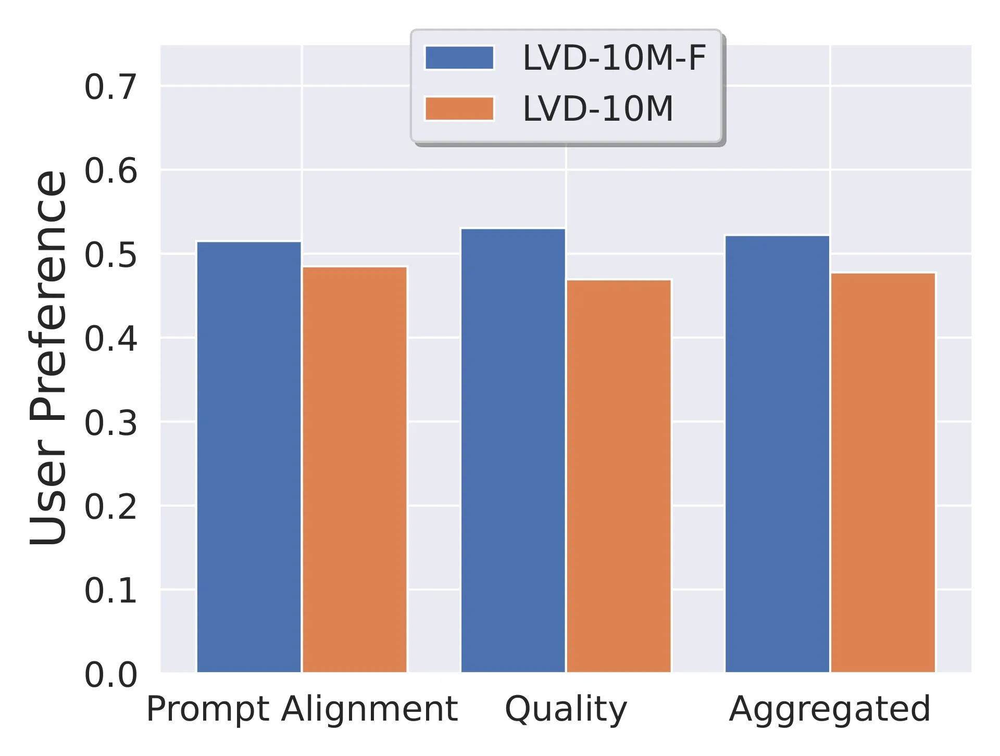
图中的偏好比例不是生成成功率；结果说明在这套训练与评估设置下，训练样本的分布与质量比单纯增加数量更值得关注。作者也在更大规模上验证筛选的收益，并发现扩大经过筛选的数据集仍有帮助。 #Blattmann-2023-SVD
三阶段怎样训练
第一阶段：继承图像知识。
模型以 SD 2.1 为起点。作者对比有图像预训练和随机初始化空间权重的两个同结构视频模型：图像预训练在画质与提示词对齐两方面都有明显优势。 #Blattmann-2023-SVD
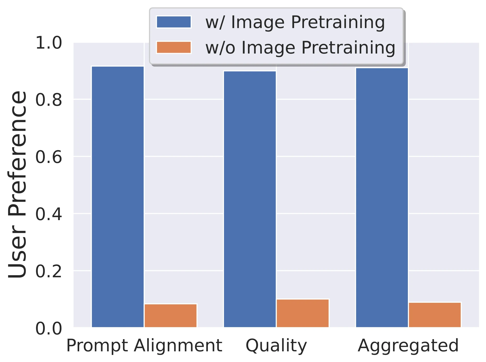
在扩大视频训练之前，作者先把图像骨干适配到连续噪声水平与 EDM 预条件。最初 1000 次迭代只训练时间嵌入层，使它适应新噪声接口；随后训练图像网络的全部层 30K 次迭代。这里的时间嵌入指扩散噪声水平的嵌入，此时还没有加入视频时间模块。 #Blattmann-2023-SVD
第二阶段：学习视频。
作者沿用 Align Your Latents 的时间卷积与注意力设计，在 U-Net 中增加约 6.56 亿个参数，使时空 U-Net 总计约 15.21 亿参数。视频先被编码为逐帧潜变量，空间层处理帧内内容，时间层连接帧间关系；模型同时读取文本、帧率和运动分数条件。 #Blattmann-2023-SVD
在 LVD-F 上先训练 14 帧、分辨率为高×宽 \(256\times384\) 的视频，再提高到 \(320\times576\)：
| 视频底模训练 | 迭代数 | batch size |
|---|---|---|
| \(256\times384\)，14 帧 | 150K | 1536 |
| \(320\times576\)，14 帧 | 100K | 768 |
分辨率升高时，作者还把训练噪声分布向更高噪声移动。较高分辨率保留更多可辨认信号，沿用原先的噪声分布未必提供足够困难的去噪任务；因此这里只改变分辨率是不够的，噪声训练设置也需要适配。 #Blattmann-2023-SVD
第三阶段：高质量微调。
作者先做受控实验：分别从图像权重、未筛选视频预训练权重、筛选视频预训练权重出发，在同一个约 25 万段高质量视频集上微调。最后一类持续更优，说明前期视频预训练的收益没有被后期高质量训练完全抹平。 #Blattmann-2023-SVD
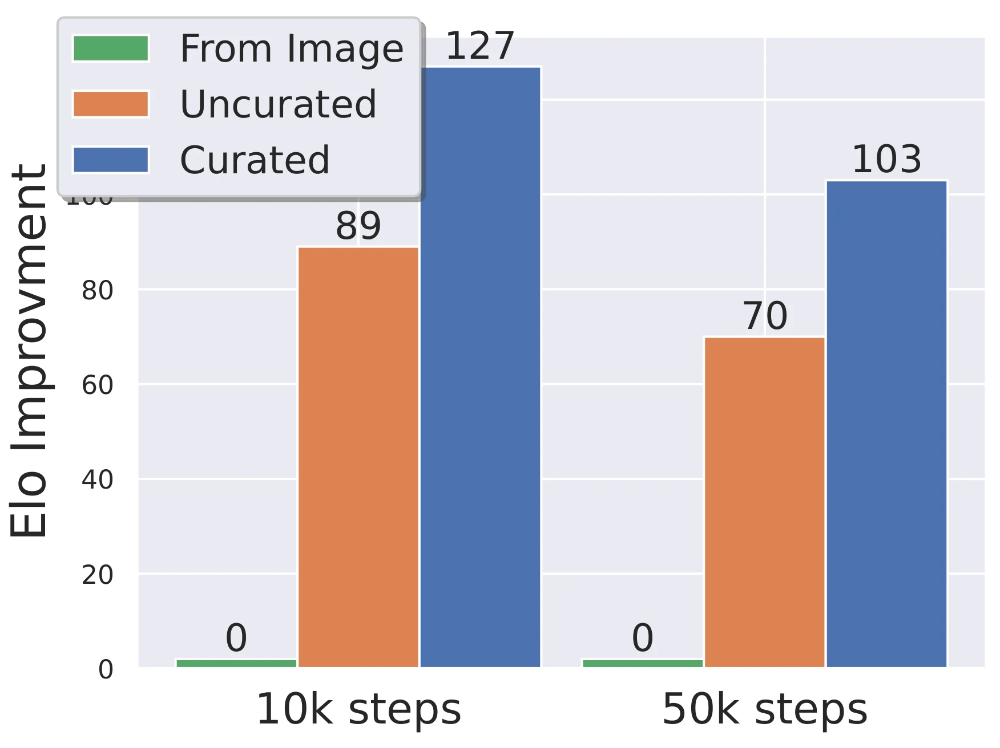
最终高分辨率文本到视频模型，则使用约 100 万段高质量视频，微调到 \(576\times1024\)。25 万段用于上述对照实验，100 万段用于最终扩展模型，不能写成同一个阶段的固定样本量。
EDM 训练目标
SVD 的最终扩展模型使用连续噪声与 EDM 预条件。为了和前面的离散 DDPM 写法区分，这里用 \(\sigma\) 表示噪声标准差。对完整干净潜视频 \(Z_0\) 加噪：
条件记为 \(c\)，包含文本或图像条件，以及帧率、运动分数等辅助信号。训练去噪器 \(D_\theta\) 恢复干净潜视频：
论文采用 \(\sigma_{\mathrm{data}}=1\) 的预条件，写成
\(F_\theta\) 是实际训练的 U-Net；\(D_\theta\) 是包含输入缩放、跳连与输出缩放的完整去噪器。完整去噪器预测干净视频，不意味着裸 U-Net 直接输出干净视频。这里保留论文输出系数的负号约定，不与其他 EDM 实现的符号混用。 #Blattmann-2023-SVD
在给定条件下，理想去噪器还对应 score：
因此，这仍然属于去噪得分匹配的框架；它把前文讨论的干净预测、score 与连续噪声统一到实际视频训练中，而不是额外引入一种独立的视频 loss。随着训练阶段变化，作者调节 \(P_{\mathrm{mean}},P_{\mathrm{std}}\)，改变模型见到各噪声水平的频率。 #Blattmann-2023-SVD
需要注意，论文前半部分用于比较数据筛选方法的消融实验仍使用离散噪声与 \(v\)-prediction。 不能把所有数据筛选曲线都当成最终 EDM 模型的同配置实验 ；三阶段策略的研究与最终大模型实现应分别阅读。
图像条件怎样加入
把文本到视频底模变成图像到视频模型，需要 额外微调 。给定参考图 \(I\)，SVD 使用两条互补的条件通路。 #Blattmann-2023-SVD
- 语义通路 ：用参考图的 CLIP 图像表示替换原来的文本表示，送入交叉注意力。
- 空间通路 ：先给参考图添加少量增强噪声，再用 SD 2.1 编码器编码；取编码分布的均值，沿视频帧轴复制，并与每一帧的带噪潜变量按通道拼接。
用示意公式表示第二条通路：
\(\mu_{\mathcal E}\) 为编码器输出分布的均值，\(\sigma_{\mathrm{aug}}\) 控制参考图增强噪声，\(f\) 为帧索引。它与扩散噪声 \(\sigma\) 是两种不同用途的量：前者扰动条件以提高鲁棒性，后者定义当前生成状态的噪声水平。
CLIP 通路提供整体视觉语义；潜变量拼接提供更具体的外观和布局。复制的是条件图的编码，不是把参考图直接当成每一帧的生成结果。真正被去噪的仍是另一组整段视频潜变量。该 I2V 接口不使用已知帧/未知帧掩码，也不是在每一步强行把首帧像素覆盖回去，因此不能保证输出首帧与输入图逐像素相同。 #Blattmann-2023-SVD
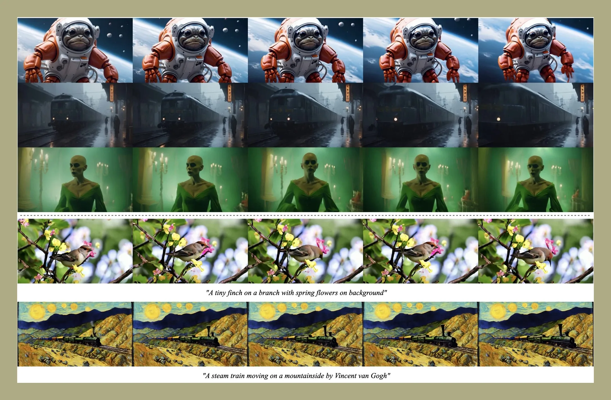
图像到视频模型先在底模分辨率适配，再在高质量视频上训练到 \(576\times1024\)，分别获得 14 帧和 25 帧版本。它并非给原文本模型临时多塞一张图，就自然获得同等能力。
采样与引导
生成从高噪声潜视频开始，以条件去噪器逐步恢复视频。论文附录用概率流 ODE 描述这个过程：
选择 \(\sigma\) 本身作为积分变量，就得到
这正是前面 EDM 篇讨论的采样向量场。先初始化 \(Z_{\sigma_{\max}}\sim\mathcal N(0,\sigma_{\max}^2I)\)，再沿递减噪声网格数值积分，最后解码视频潜变量。Euler 或 Heun 等求解器可以利用这一表达式，但论文没有为最终所有任务模型给出一套统一的求解器与步数，本节不据此指定默认采样配置。 #Blattmann-2023-SVD
图像到视频还遇到一个引导强度的取舍：条件引导过弱会偏离参考图，过强则可能导致过饱和。作者让 CFG 强度沿视频帧轴线性增大：
\(D_c,D_u\) 分别是有条件与无条件去噪结果，\(F>1\)。这是对原论文线性引导实现的数学整理：越靠后的帧使用越大的引导系数，不是在扩散迭代过程中逐步增大同一个系数。帧率和运动分数则是额外模型条件，用于影响生成运动；它们不等同于精确的逐物体轨迹控制。 #Blattmann-2023-SVD
补帧与相机控制
SVD 的底模可以继续适配不同任务，但每种适配都需要对应训练。
- 帧插值：单独微调一个模型，输入左右两个已知帧，在中间生成三帧，把帧率提高四倍。它使用条件潜变量拼接和二值掩码，区别于上面不使用掩码的单图 I2V 接口。
- 相机运动 LoRA：在时间注意力模块中训练低秩参数，分别学习水平移动、缩放和静止相机。论文使用 rank 16、5K 次迭代；不是简单修改 fps 就获得这些相机模式。
- 多视角生成：用物体多视角数据进一步微调，使输出序列表示不同观察视角。视频预训练提供可迁移的先验，但一个普通视频模型并不自动成为可靠的三维重建器。 #Blattmann-2023-SVD
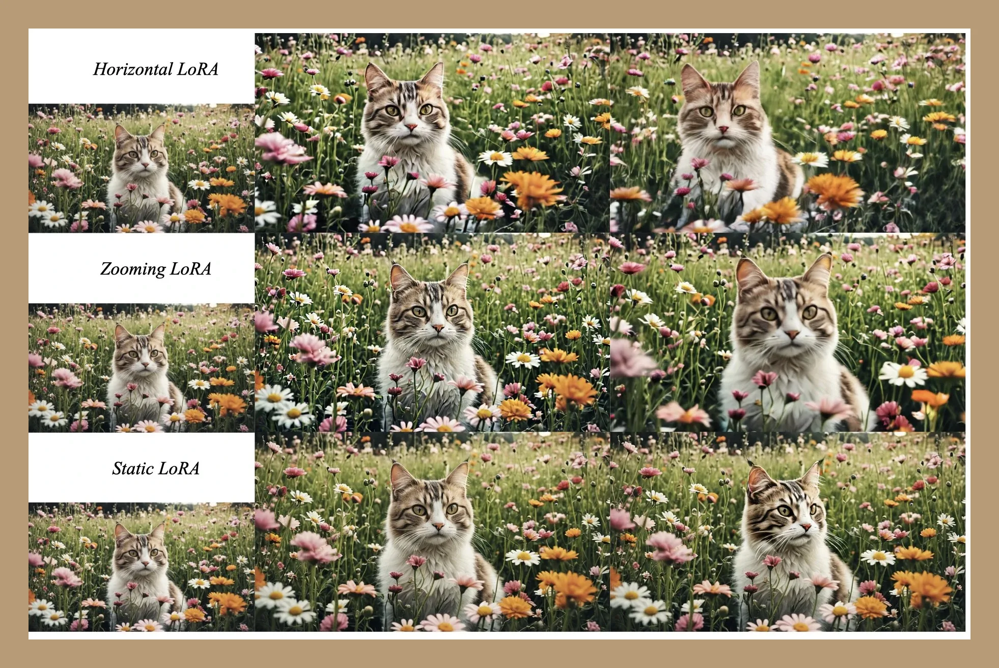
与前面 VDM 的推理期重建引导相比，这里的补帧是专门训练的条件生成任务；与 Video LDM 相比，它延续了掩码条件适配的思路，并进一步系统研究大规模视频预训练与数据筛选。这几种方式都能利用已知图像，但使用条件的位置、是否需要额外训练并不相同。 #Blattmann-2023-SVD
总结与局限
SVD 的核心贡献可以概括为：先利用图像知识，再在经过筛选的大规模视频上学习运动，最后以高质量数据和任务条件微调。原文用图像初始化、数据筛选和预训练保留效应等对照，说明“怎样训练、用什么数据”对视频模型同样关键。 #Blattmann-2023-SVD
它仍有原文明确承认的局限：短视频表现较好，但同时生成更多帧的计算与显存开销很大；有时生成运动不足；扩散采样依然较慢。更高画质、相机 LoRA 和补帧都不自动解决长期身份保持、复杂动作或物理一致性。论文的人评结果也对应当时的模型版本和具体设置，不能泛化为持续优于所有后续系统。 #Blattmann-2023-SVD
后面的 VideoCrafter2 将从另一个角度继续处理数据质量：当高质量视频不足时，怎样用高质量图片改善外观，并尽量保留视频运动。两篇都重视训练数据，但 SVD 的核心是视频预训练与高质量视频微调，VideoCrafter2 则重点研究图像微调时空间、时间模块的选择。 #Blattmann-2023-SVD
原文：VideoCrafter2: Overcoming Data Limitations for High-Quality Video Diffusion Models（Chen 等，2024）。这一篇把问题从“怎样构造视频网络”转向“缺少高质量视频时，怎样把视频模型训练好”。 #Chen-2024-VideoCrafter2
问题：视频有运动，画质却不够好
前面的模型已经能把图像扩散骨干扩展为视频模型，但高质量、内容多样且配有准确描述的视频并不容易获得。WebVid-10M 提供约一千万个文本—视频对，能够教模型物体怎样运动，却也包含较低分辨率、压缩痕迹和水印。直接拟合这些视频，模型也会学到它们的外观缺陷。 #Chen-2024-VideoCrafter2
与此同时，高质量图片比高质量视频容易获得。那么能不能分工：用视频学习运动，用图片改善外观？难点在于，视频网络中的空间模块与时间模块共同处理同一组特征。修改空间模块以后，时间模块看到的输入也会改变；把一套漂亮的图像权重换进去，并不能保证视频仍然动得自然。 #Chen-2024-VideoCrafter2
VideoCrafter2 采用先联合训练、再选择性微调的两阶段方案： #Chen-2024-VideoCrafter2
| 阶段 | 训练数据 | 空间模块 | 时间模块 |
|---|---|---|---|
| 视频底模训练 | WebVid-10M 视频＋LAION-COCO 图片 | 更新 | 更新 |
| 高质量图像微调 | JourneyDB 图片 | 直接更新原权重 | 冻结 |
第一阶段从 SD 2.1 初始化空间模块，加入时间模块，让两类模块共同适应视频，得到全量训练底模 F-base。第二阶段用高质量图片改善外观，只直接微调空间参数，得到最终模型 F-Spa-DIR；这些名称的含义将在下文展开。 #Chen-2024-VideoCrafter2
论文把它称为“数据层面的外观与运动解耦”。“解耦”主要指数据来源和训练阶段的分工：视频提供运动监督，后续高质量图片提供外观监督。第一阶段联合图像训练也帮助保留图像概念，因此这种分工并非两种数据各自只承担一种作用。 #Chen-2024-VideoCrafter2
空间与时间模块在数学上并不完全独立。即使冻结时间权重，空间特征改变后，时间模块接收的输入也会变化，运动仍可能受到影响。作者通过消融发现：从共同训练过的底模出发，第二阶段只更新空间模块，比同时更新时间模块更能保持运动稳定。这里得到的是实验支持的训练策略，不是“冻结时间模块就一定保持运动不变”的保证。 #Chen-2024-VideoCrafter2
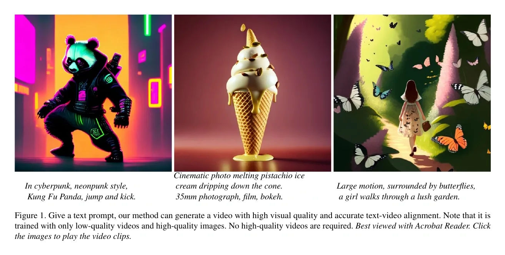
为什么不能直接替换空间模块
作者先做了一个受控比较：使用相同架构、相同数据，从 Stable Diffusion 2.1 初始化空间模块，比较两种视频训练方式。 #Chen-2024-VideoCrafter2
这里的 base 指接受视频训练后、尚未进行后续高质量图像微调的基础模型，简称“底模”。作者将两种底模分别记作：
- F-base：Fully trained base model，即“全量训练底模”。F 来自 fully，表示视频训练时同时更新空间与时间模块。
- P-base：Partially trained base model，即“部分训练底模”。P 来自 partially，表示视频训练时只更新时间模块，空间模块保持预训练图像模型的权重。
“部分训练”说的是只更新部分参数；两者的对照实验使用相同训练数据。直观上，F-base 让两类模块共同适应视频，P-base 则让时间模块适应固定的图像骨干。 #Chen-2024-VideoCrafter2
| 视频底模 | 空间模块 | 时间模块 | 训练后的含义 |
|---|---|---|---|
| 全量训练 F-base | 更新 | 更新 | 两类模块共同适应视频特征 |
| 部分训练 P-base | 冻结为原始 SD 权重 | 更新 | 时间模块适应固定的图像骨干 |
随后，作者用高质量图片对指定模块进行 LoRA 微调，观察画面改善时运动是否退化。这里的“参数扰动”指这种有目标的微调，不是在权重里随意添加随机噪声。 #Chen-2024-VideoCrafter2
实验发现，P-base 的画质可以明显改变，但运动更容易退化，表现为画面趋于静止、局部闪烁；F-base 在微调后更能保留运动。空间 LoRA 微调的运动偏好比较中，87% 的选择支持全量训练底模；时间 LoRA 微调的对应比例为 73%。这些是论文 Table 4 的主观比较结果，支持“全量训练底模更能承受后续微调”，不是证明某种架构永远不会丢失运动。 #Chen-2024-VideoCrafter2
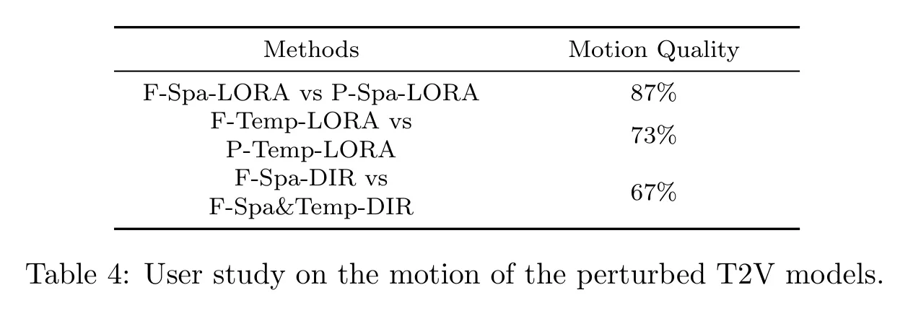
表中每一行比较两个模型，百分比表示偏好左侧模型运动质量的比例，不是准确率。前两行分别在空间或时间 LoRA 微调后比较 F-base 与 P-base；第三行比较仅空间直接微调与空间、时间共同直接微调。因而它回答的是两件事：底模是否经过联合训练，以及后续微调更新哪些模块，会影响运动保持。 #Chen-2024-VideoCrafter2
另一个重要观察是：只更新时间模块，也会改变画质。因此，不能简单把空间参数等同于“只管长相”，把时间参数等同于“只管运动”。正因为两者有联系，后续图像微调采用什么底模、更新哪些参数，才需要实验选择。 #Chen-2024-VideoCrafter2
第一阶段：共同学习视频
模型沿用 VideoCrafter1 的潜空间视频扩散架构和 fps 条件，并加入 ModelScopeT2V 的时间卷积。空间权重从 SD 2.1 初始化，新增时间模块的输出投影采用零初始化。底模训练使用 WebVid-10M，并联合 LAION-COCO 图像训练，以减少原有概念知识的遗忘。 #Chen-2024-VideoCrafter2
设视频潜变量为 \(Z_0=\mathcal E(X_0)\)，前向加噪仍写成
这里 \(\mathcal E\) 是图像编码器，\(t\) 是扩散时间，\(a_t,b_t\) 决定信号与噪声的比例。视频样本的训练仍可用前文的噪声回归目标理解：
\(\theta_S\) 和 \(\theta_T\) 分别表示空间与时间参数，\(c\) 是文本条件，\(f\) 是帧率条件。这一阶段两组参数都更新。联合图像训练则提供图像去噪监督；论文没有披露图像与视频的具体混采比例，不能据此写出一个确定的损失权重。
上述公式是沿用前文符号对训练机制的归纳。VideoCrafter2 的主要贡献在于数据和参数更新策略，并未在这里提出一种新的前向加噪分布。 #Chen-2024-VideoCrafter2
论文披露的底模训练配置为：分辨率 \(512\times320\)、32 张 A100、270K 次迭代、batch size 128、学习率 \(5\times10^{-5}\)。这说明它降低的是对高质量视频数据的依赖，底模本身仍需要较大规模训练。 #Chen-2024-VideoCrafter2
第二阶段：图片改善外观
得到全量训练底模后，作者使用 JourneyDB（文中简称 JDB）微调。该数据集包含约四百万张 Midjourney 合成的高分辨率图像及其提示词；这些图片既提供画质，也包含现实视频中不常见的概念组合。 #Chen-2024-VideoCrafter2
这一阶段冻结时间参数，直接更新空间参数。若第一阶段结果记作 \((\theta_S^*,\theta_T^*)\)，其优化约束可概括为
\(\mathcal L_I\) 表示高质量图像上的去噪训练损失。这个写法强调哪些参数可变，不补设论文没有说明的图像张量接入细节。最终模型称为 F-Spa-DIR：F 表示全量训练底模，Spa 表示空间模块，DIR 表示直接微调原有权重，而非只训练 LoRA 低秩分支。 #Chen-2024-VideoCrafter2
为什么选择它？原论文 Table 3 同时比较底模、LoRA 微调、直接微调以及图像数据来源。下面保留完整表格；阅读最终方案时，重点比较 F-Spa-DIR、F-Temp-DIR、F-Spa&Temp-DIR 与 F-Spa&Temp-LoRA 四行。 #Chen-2024-VideoCrafter2
表中 Spa 表示空间模块，Temp 表示时间模块，Spa&Temp 表示两者都更新；LoRA 表示低秩分支微调，DIR 表示直接更新原权重。末行 LAION 表示用 LAION 图片替代 JourneyDB。美学分数和技术质量分数均由 DOVER 评价，都是越高越好，但它们不能代替运动质量评价。 #Chen-2024-VideoCrafter2
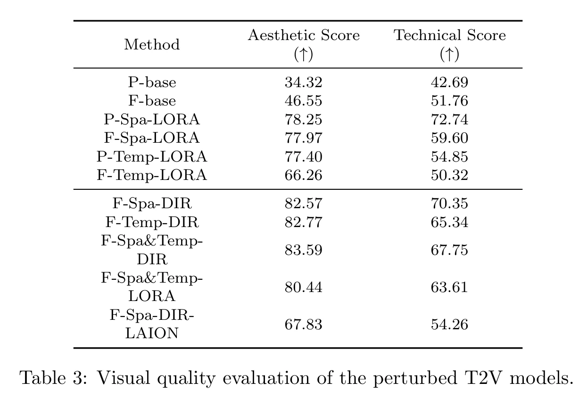
数值来自原论文 Table 3。只看美学分数，同时更新两类模块略高；但作者观察到这种方式容易产生前景与背景闪烁。Table 4 的运动质量比较中，67% 的选择偏好仅空间直接微调。因此，最终方案是画质与运动保持之间的选择，不能概括为“所有指标都最高”。 #Chen-2024-VideoCrafter2
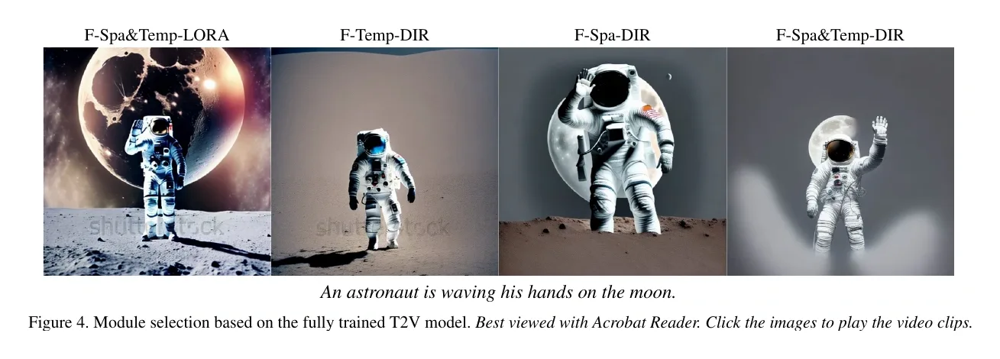
这里还有一个值得保留的限制：冻结时间权重不等于数学上锁定运动。空间特征改变后，时间模块的输出仍可能变化。第一阶段的联合适配以及第二阶段的参数选择，提供的是实验上较好的运动保持能力。 #Chen-2024-VideoCrafter2
合成图片为什么有帮助
例如，“穿着赛博朋克服装的熊猫”既需要识别熊猫，又需要组合服装、风格与环境。高质量合成图片可以先提供这种组合的静态外观，让视频学习不必同时承担全部概念与运动学习压力。 #Chen-2024-VideoCrafter2
作者也用 LAION-Aesthetics V2 的网络图片替代 JDB，进行相同的仅空间直接微调。其 DOVER 美学／技术分数为 67.83／54.26，低于 JDB 的 82.57／70.35；定性示例也支持 JDB 在该实验中的概念组合优势。不过，这项比较同时涉及数据内容、质量与来源等差异，不能据此断言合成图片在所有任务上都优于真实图片。 #Chen-2024-VideoCrafter2
生成时怎样使用
两个训练阶段结束后，推理使用的是一个微调完成的视频去噪网络，不需要先生成一段低质量视频、再运行一次图片微调。文本与 fps 条件进入网络，从高斯视频潜变量开始逐步去噪，最后解码为视频帧： #Chen-2024-VideoCrafter2
- 编码输入文本，指定帧率条件，并初始化整段视频的噪声潜变量 \(Z_T\)。
- 在各采样时刻，用最终的空间与时间模块共同预测噪声。
- 由所选采样器更新视频潜变量，重复直到获得 \(Z_0\)。
- 使用解码器恢复视频帧。
这是模型接口层面的采样流程；本节原文没有给出足够的具体采样配置，因而不额外指定 DDIM 步数或 CFG 数值。它也没有把上述高质量图像微调设计成每次生成都要执行的步骤。 #Chen-2024-VideoCrafter2
结果与局限
论文使用 EvalCrafter 的约 512 条提示词及多项指标评估。与 VideoCrafter1 对照，VideoCrafter2 的视觉质量聚合分数为 63.28 对 61.64，时间一致性为 62.02 对 60.36；文本—视频对齐为 64.67 对 66.76，运动质量为 53.95 对 56.06。它改善了一部分维度，同时仍有运动与对齐方面的不足；这些分数对应论文当时的模型版本与评测口径。 #Chen-2024-VideoCrafter2
补充材料还报告：在 MSR-VTT 零样本评估中，JDB 微调后的 F-Spa-DIR 比 F-base 的 FVD 更高（该指标越低越好）。作者将其部分归因于生成分布转向 JDB。这进一步提醒我们：更漂亮的画面、与评测视频分布更接近，是两个不同的评价问题。 #Chen-2024-VideoCrafter2
我们可以把它的贡献总结为：先用可获得的视频建立时空协作，再用高质量图片修正外观分布。它延续潜扩散与时空网络，重点改善训练数据的使用方式。高质量图片并不包含真实运动监督，因此不能直接补足复杂动作、长时序事件与物理交互所需要的视频知识；图片带来的分布变化，也不保证每一项视频指标都同步改善。 #Chen-2024-VideoCrafter2
官方资源：VideoCrafter 代码与模型入口。
六个模型共享去噪生成的基本框架，差异主要出现在表示、条件、网络和数据使用上。理解这些区别，比把它们都概括为“给图像模型加时间层”更有用。
| 模型 | 主要设计 | 推理时的关键区别 |
|---|---|---|
| ModelScope T2V | 潜空间时空模块，图像—视频混训 | 整段潜噪声联合去噪，再逐帧解码 |
| LaVie | 基础、插值、超分三级潜扩散 | 后两级以已有视频为条件，各自多步去噪 |
| Show-1 | 低分辨率像素对齐，末级潜空间专家细化 | 末级从已有结果的中间噪声状态出发 |
| VideoCrafter1 | 文本与图像双交叉注意力，渐进分辨率训练 | 参考图通过视觉特征指导整段视频生成 |
| Stable Video Diffusion | 筛选数据、三阶段训练、EDM与任务适配 | I2V具有语义与空间两路条件，补帧另行适配 |
| VideoCrafter2 | 联合训练底模，再用图片只微调空间参数 | 生成使用最终单个视频模型，无需临时训练 |
这些路线分别改善了可复用性、细节、文本对齐、参考图控制或画面质量，但没有由此解决长时序身份保持与复杂物理运动。静态图片能补充外观知识，不能直接提供完整的运动监督；更好的单帧指标也不等于更稳定的视频。各论文实验的模型版本、数据和评测协议不同，应先读各自的受控消融，再判断具体设计的作用。 #Wang-2023-ModelScope #Wang-2023-LaVie #Zhang-2023-Show1 #Chen-2023-VideoCrafter1 #Blattmann-2023-SVD #Chen-2024-VideoCrafter2
下一篇转向其他早期视频生成研究，继续比较噪声构造与时空建模上的不同选择。
参考文献
- Zhang, D. J. et al. Show-1: Marrying Pixel and Latent Diffusion Models for Text-to-Video Generation. 2023 年首次公开；本节参考 arXiv 当前修订版。像素与潜空间混合级联、掩码插值及 expert translation 来源。官方代码。
- Wang, Y. et al. LaVie: High-Quality Video Generation with Cascaded Latent Diffusion Models. 2023。三级潜扩散、联合图像—视频训练、Vimeo25M、时间插值与视频超分辨率来源。官方代码。
- Chen, H. et al. VideoCrafter1: Open Diffusion Models for High-Quality Video Generation. 2023。潜视频扩散、fps 条件、图像 patch 表征与双交叉注意力、分阶段训练来源。官方代码。
- Chen, H. et al. VideoCrafter2: Overcoming Data Limitations for High-Quality Video Diffusion Models. 2024。空间与时间模块耦合分析、全量视频训练与高质量图像空间微调、数据来源与消融实验来源。官方资源。
- Wang, J. et al. ModelScope Text-to-Video Technical Report. 2023。潜视频扩散、时空卷积与注意力、多帧长度图像—视频混训及 DDIM 采样的原始来源。
- Blattmann, A. et al. Stable Video Diffusion: Scaling Latent Video Diffusion Models to Large Datasets. 2023。三阶段训练、数据筛选、连续噪声与 EDM 预条件、图像条件、补帧和相机运动适配的原始来源。官方代码与发布入口。
- ModelScope 官方实现：文本到视频模型与 AutoencoderKL 定义。模型构造 KL 自编码器，编码返回高斯分布；用于核验论文 VQGAN 名称与实际组件的差异。核对上游当前 master，未断言 2023 年具体历史提交。